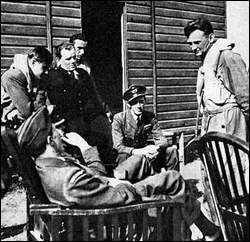

|
Autor: ada, Nowiny, 2004.06.15
Urna przyleci z Kalifornii Pilot Dywizjonu 303 spocznie w Radomyœlu Wielkim Lotnicy Dywizjonu 303 podczas krótkiego odpoczynku w czasie bitwy o Anglie. To bohaterowie powieœci Arkadego Fiedlera, który pisal takze o Henryku Mermelu. Fot : ARCHIWUM MIELEC. Henryk Mermel, pilot Dywizjonu 303 walcz¹cego o Anglie i bohater ksi¹zki Arkadego Fiedlera pokochal Radomyœl tak bardzo, ze przed œmierci¹ poprosi³ rodzine, by zlo¿y³a tu jego prochy. Doczesne szcz¹tki bohatera przylec¹ prawdopodobnie z Kalifornii 14 sierpnia. Niewykluczone, ze w Radomyœlu zagoœci córka bohatera. Mermel wprawdzie nie wywodzi sie z Radomyœla, ale jego nazwisko jest tu dobrze znane. Widnieje na tablicy przed pomnikiem lotników Polskich Sil Powietrznych na Zachodzie, wœród nazwisk innych pilotów walcz¹cych w II wojnie œwiatowej w oddzialach aliantów. W 1998 r., podczas odsloniecia pomnika, Mermel zakochal sie Radomyœlu zyj¹cym lotniczymi tradycjami. Przyznal wówczas, ze chce wrócic do kraju. Przodkowie pilota mieszkali niegdyœ w Wadowicach Górnych. Ale nie wrócil tam za zycia. Na miejsce wiecznego odpoczynku wybral Radomyœl i to zyczenie przekazal swoim dzieciom w ubieglym roku tuz przed œmierci¹. Mial 87 lat. Urna z prochami jest przygotowana do przewiezienia. Nie wiadomo, kiedy dokladnie zakoncz¹ sie formalnoœci z tym zwi¹zane. Wmurowanie urny z prochami w obelisk planowane jest wstepnie na 14 sierpnia. Jak mówi Jan Ziobron, historyk z Radomyœla, przy prochach oficera Henryka Mermela powinna byc musztra, salwa honorowa i apel poleglych. Miros³aw Wnuk © 2006-2004 |